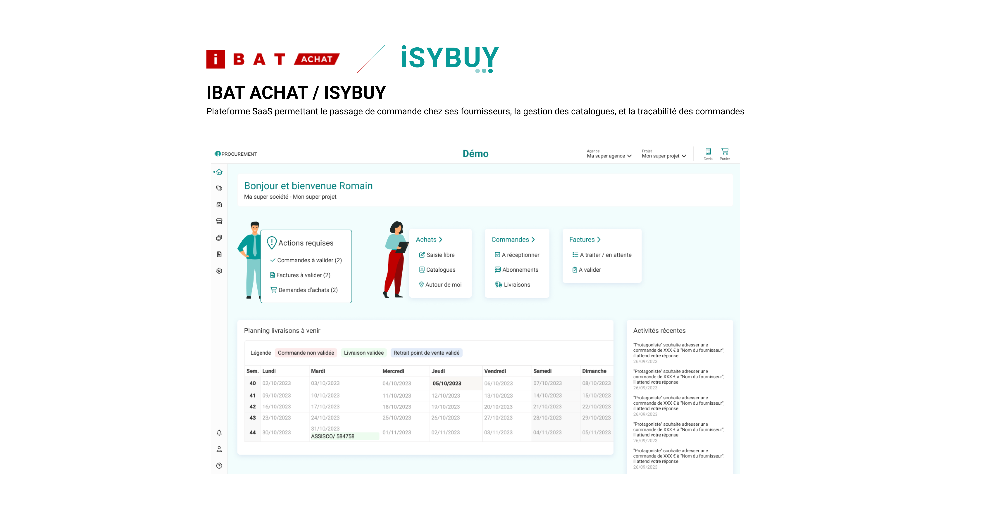
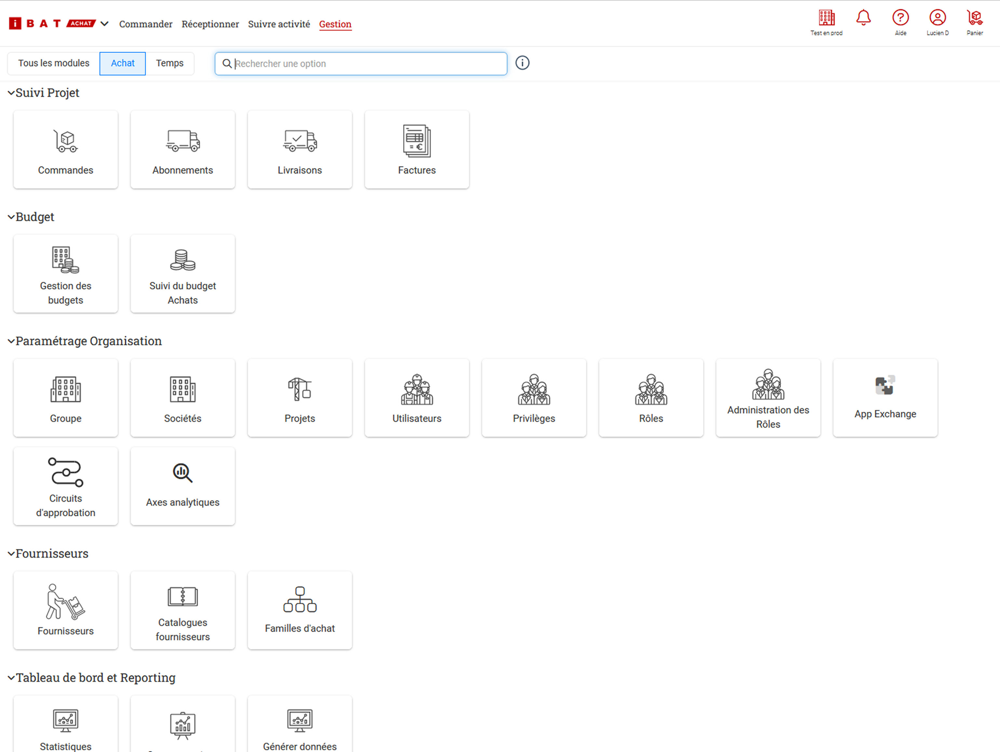
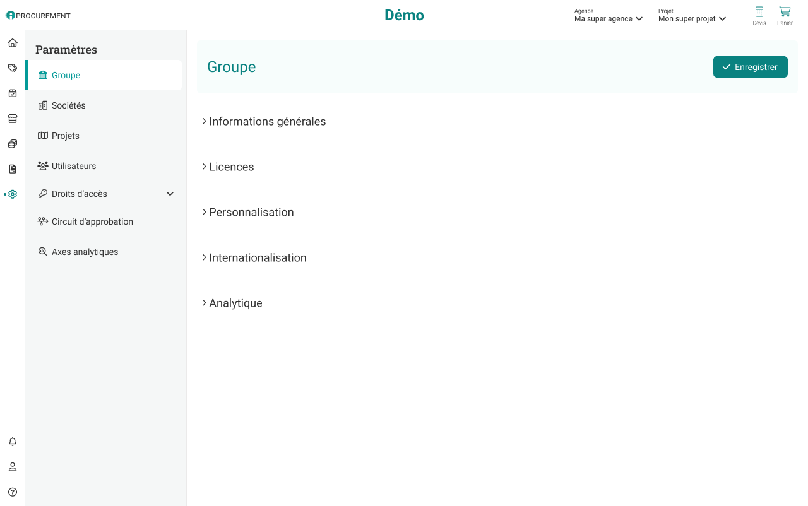
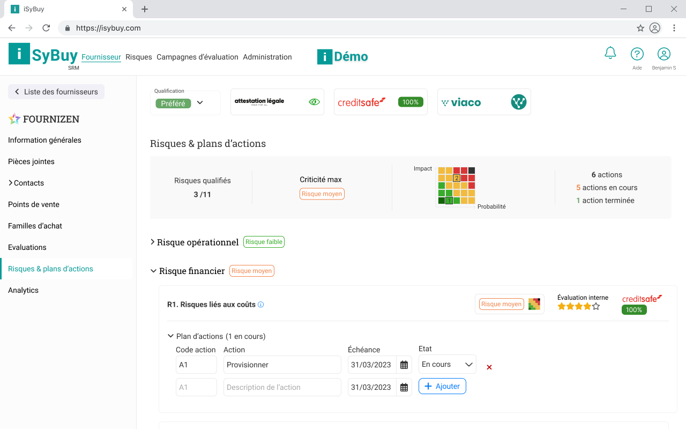
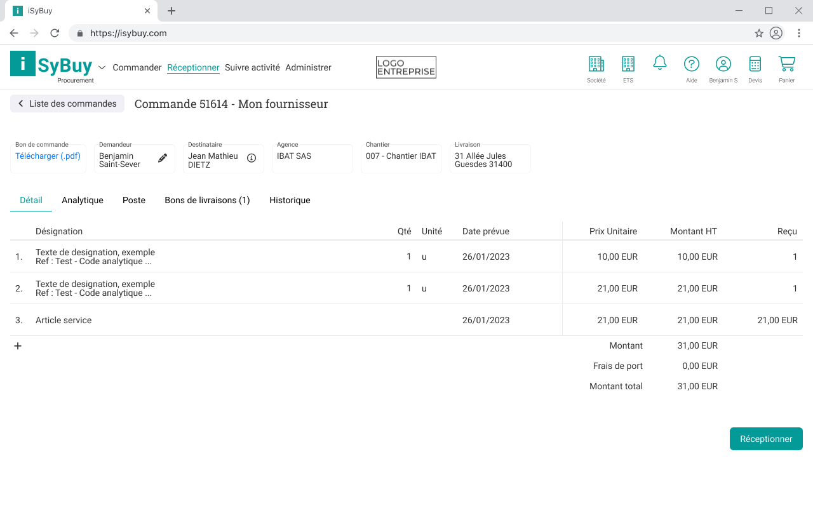
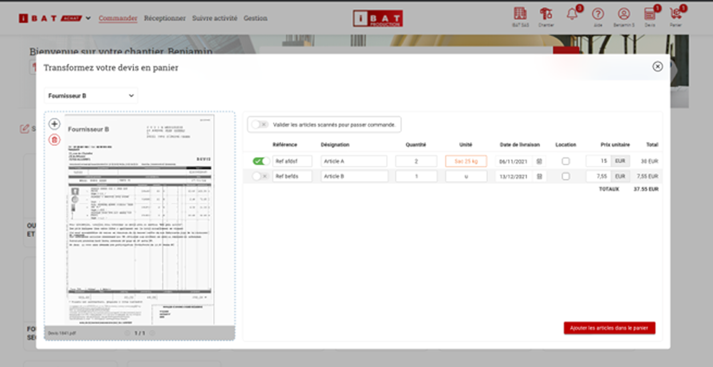
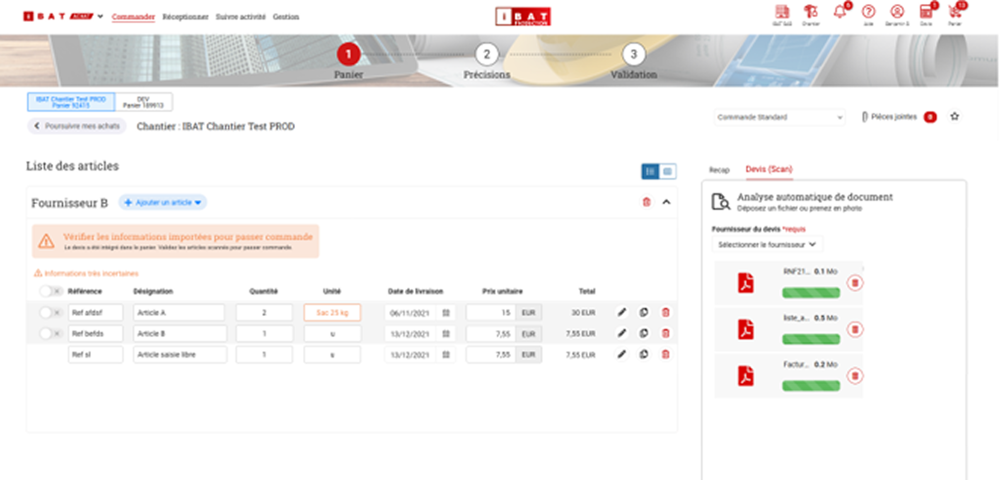
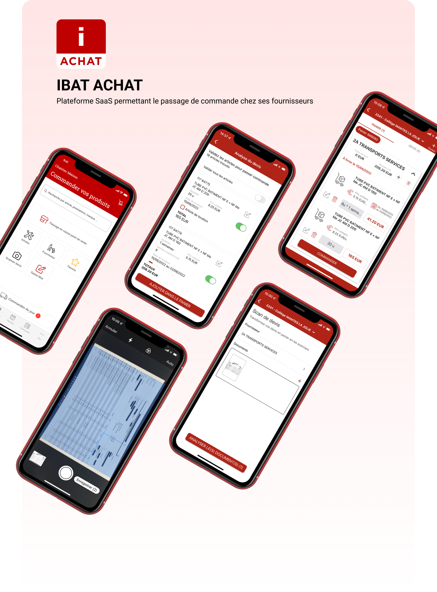
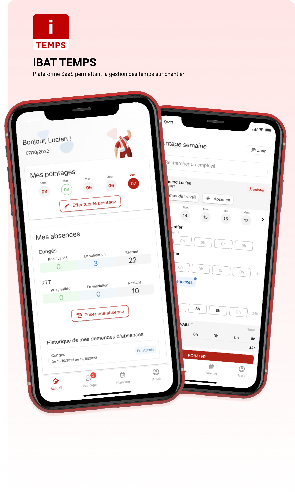
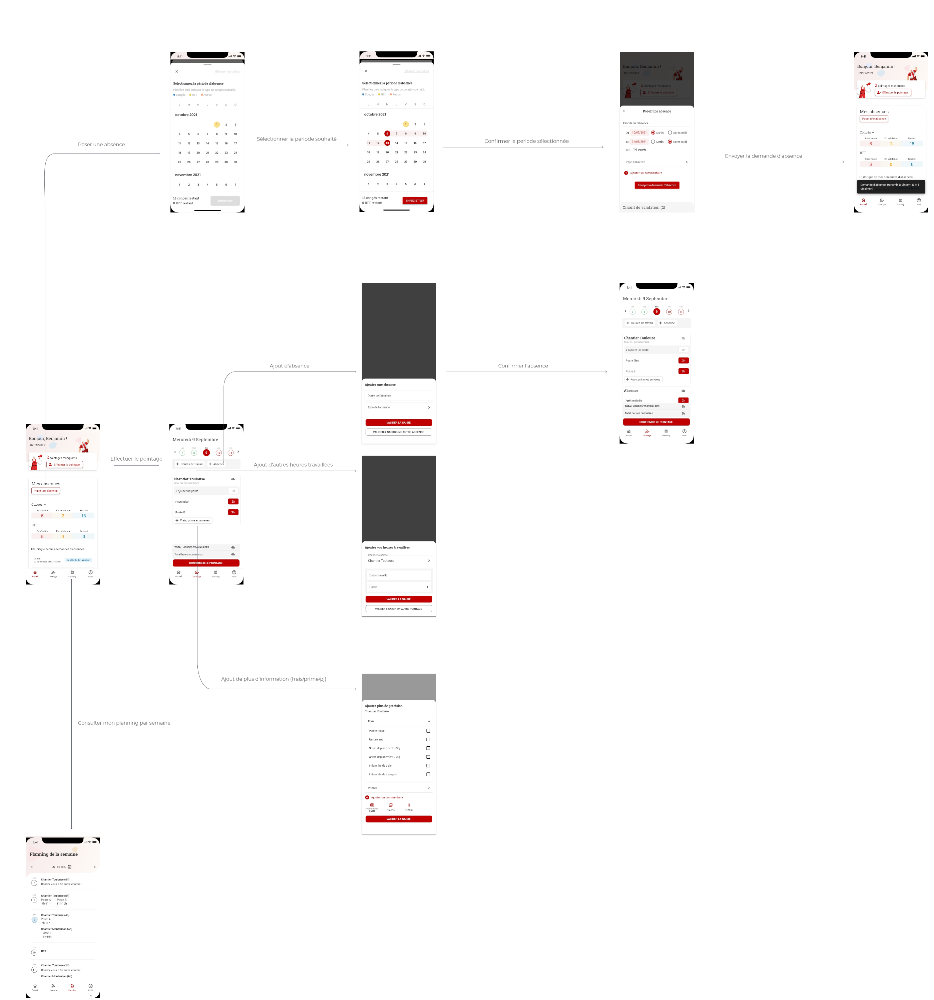

Plateforme d'achat SaaS (ISYBUY)
Décliner un produit cœur en marque blanche, avec un design system et des décisions pilotées par la preuve.
ISYBUY décline le socle d'IBAT Achat pour les achats en entreprise hors BTP, vendu en marque blanche. J'ai piloté un design system de règles génériques (tableaux, formulaires, navigation refondue) pour qu'un socle unique accueille tous les clients sans sur-mesure, plus des vues de sourcing propres au pilotage du panel fournisseurs.

ACCUEIL ISYBUYL'accueil ISYBUY, la plateforme d'achat déclinée pour l'entreprise.
ISYBUY est une plateforme SaaS de commande fournisseurs, gestion de catalogues et traçabilité. Elle est entièrement bâtie sur le code d'IBAT Achat, l'outil pensé pour le BTP : le même socle produit, décliné cette fois pour les achats en entreprise hors BTP et vendu en marque blanche. Mon rôle était de piloter le design system et de mener la recherche utilisateur sur ce produit web, au sein d'une équipe de 1 PO, 1 PM et 8 développeurs.
Le produit cœur s'était construit au fil des besoins, sans méthode structurante. Résultat : des outils pourtant similaires, comme les tableaux et les formulaires, fonctionnaient différemment d'un écran à l'autre, et la navigation, accumulée en blocs, était devenue confuse pour les utilisateurs comme en interne. Décliner ce socle en marque blanche pour un nouveau marché rendait cette mise en cohérence d'autant plus nécessaire.
- Recensé les types de vues récurrents et établi un design system de règles génériques documentées : formulaires en colonne unique à séquence logique, et un modèle de tableau unifié (filtres ajoutables sans limite, recherche, personnalisation des colonnes, export Excel, PDF et image, pagination).
- Refondu la navigation, d'une accumulation de blocs vers un panneau latéral et un bandeau fixe, après plusieurs itérations et une réflexion de fond destinée à servir de base aux produits futurs.
- Adapté ce système à la déclinaison en marque blanche, pour que chaque client retrouve une base cohérente sous sa propre identité.

Avant
La navigation accumulée en blocs, devenue confuse.

Après
Panneau latéral et bandeau fixe, pensés pour durer.
Un seul socle pour tous les clients
Vendre le produit en marque blanche rendait tentant d'adapter chaque écran à chaque client, au cas par cas. Le problème, c'est qu'à mesure que les clients s'ajoutent, ce sur-mesure devient impossible à maintenir. J'ai posé l'approche inverse : un design system de règles génériques, des modèles de tableau, de formulaire et de navigation valables partout, sur lesquels l'identité de chaque client vient se poser sans toucher à la structure. La cohérence vient du système, pas d'un travail répété écran par écran.
Ce choix demande plus d'effort au départ, mais c'est lui qui rend la marque blanche tenable : un socle unique à maintenir, des déclinaisons clientes qui ne le fragilisent pas, et une base réutilisable au-delà de ce seul produit.
Le principe que je retiens : pour décliner un produit chez plusieurs clients, mieux vaut un socle assez générique pour les accueillir tous que des adaptations cas par cas qui finissent par s'empiler.
Des features de sourcing
Décliner le produit pour l'entreprise hors BTP, ce n'était pas qu'un changement d'habillage. ISYBUY a reçu des features propres au sourcing achats, absentes de la version BTP : l'évaluation des fournisseurs sous l'angle du risque et de la criticité, le suivi RSE, et les plans d'actions associés. Ces vues sont denses en données et conçues pour aider une direction achats à décider où concentrer son attention. C'est aussi ce qui donnait sa valeur à la déclinaison en marque blanche, en offrant à chaque client un outil de pilotage du panel fournisseurs.

La lisibilité des tableaux
Un exemple de la rigueur appliquée au design system : pour les colonnes de tableau, j'ai aligné le contenu selon sa nature (texte à gauche, montants à droite) et placé le tri à l'opposé de cet alignement. Ce parti pris préserve la lisibilité en évitant que l'élément de tri ne se confonde avec la lecture de la colonne.

ISYBUY a permis de porter le produit cœur vers un nouveau marché, l'achat en entreprise hors BTP, sans repartir de zéro : le même socle, décliné en marque blanche, enrichi de vues de sourcing propres à ce public. Le design system a unifié les vues récurrentes et donné une base de navigation pensée pour durer au-delà de ce seul produit, ce qui était précisément la condition pour qu'une déclinaison multi-clients reste maintenable.
Scan de devis, du papier au panier
Une décision de conception tranchée par un test utilisateur, pas à l'instinct.
Débat interne sans consensus : héberger le scan dans la page du panier ou dans une modale dédiée ? J'ai prototypé les deux versions et les ai comparées en test à distance (questionnaire SUS). La modale a gagné car elle isole la tâche critique. Décision tranchée par la preuve.

MODALE RETENUE APRÈS TESTLa version en modale, retenue après comparaison en test utilisateur.
Sur la plateforme web IBAT Achat, une feature permet de transformer un devis fournisseur en panier de commande directement à partir de son scan. C'est une tâche clé du parcours d'achat, mais aussi une tâche dense : il faut reconnaître les articles, vérifier les quantités et les prix, puis valider. La question de conception était de savoir où l'héberger dans l'interface.
Deux intégrations s'opposaient, et le débat était interne, sans consensus évident. Fallait-il héberger le scan directement dans la page du panier, au plus près du contexte de commande, ou l'isoler dans une modale dédiée ? Chaque camp avait ses arguments, et trancher à l'instinct risquait d'imposer une intuition plutôt qu'une réponse.

Isoler la tâche critique dans une modale
Plutôt que de trancher à l'instinct, j'ai prototypé les deux versions sous Adobe XD et Figma, puis les ai comparées à distance sur deux groupes d'utilisateurs avec un questionnaire SUS. Intégrée à la page du panier, la tâche se diluait au milieu de trop d'éléments et les utilisateurs avaient du mal à l'accomplir. La modale l'a emporté précisément parce qu'elle isolait l'action et focalisait l'attention sur la seule chose à faire. J'ai donc abandonné l'intégration en page au profit de la modale, plus claire et plus efficace.
Le principe que je retiens : une tâche critique gagne à être isolée de son contexte quand l'environnement est dense.
Le parcours retenu a été validé directement par les utilisateurs en test plutôt que choisi à l'instinct, ce qui a tranché un débat interne par la preuve. Les retours de satisfaction sur la solution étaient positifs. C'est l'exemple le plus net, dans mon travail sur IBAT, d'une décision de conception arbitrée par une comparaison mesurée plutôt que par une opinion.
Achat mobile
Commander chez les fournisseurs depuis le chantier, même sans réseau.
App de commande terrain conçue autour du mode déconnecté : préparer une commande sans réseau, synchroniser au retour. Second arbitrage : permettre la saisie d'achats faits sur place pour ne pas forcer un flux unique.

APP IBAT ACHATÉcrans de commande et scan de document.
Avant l'application, la commande passait par téléphone, via un commercial. Le process était lent, générait de la paperasse, et n'offrait aucune traçabilité. Sur le terrain s'ajoutait une contrainte concrète : le réseau mobile est souvent faible ou absent sur un chantier, et les habitudes d'achat ne passent pas toujours par un flux numérique propre.
- Mené la recherche utilisateur (personas, user journey) pour comprendre comment se passe réellement une commande sur le terrain.
- Conçu les wireframes puis un storyboard haute-fidélité : passage de commande, suivi, et un scan de document pour capturer un devis ou un bon directement depuis le téléphone.
- Décliné dans l'UI kit IBAT pour rester cohérent avec le reste de la suite.
Concevoir pour le chantier sans réseau, pas pour le bureau connecté
La façon simple de concevoir une application de commande, c'est de supposer une connexion permanente. Sur un chantier, cette hypothèse tombe. J'ai fait le choix de concevoir autour du mode déconnecté : préparer et saisir une commande sans réseau, puis synchroniser une fois la connexion revenue.
C'est une contrainte structurante qui change la conception : penser les états intermédiaires, ce qui est enregistré localement, ce qui se synchronise, et comment l'utilisateur sait où il en est. Ce parti pris vient directement du terrain observé en recherche, pas d'une préférence technique.
Respecter les habitudes d'achat sur place
Tout ne passe pas par une commande anticipée. Il arrive qu'un achat soit fait directement en point de vente. Plutôt que de forcer un flux unique, l'application permet de saisir a posteriori un achat réalisé sur place, pour que la traçabilité reste complète sans contraindre les habitudes terrain.
L'application a remplacé la commande par téléphone et la paperasse par un parcours traçable, utilisable depuis le chantier y compris sans réseau. Le scan de document a simplifié la capture d'un devis ou d'un bon sans ressaisie.
Gestion des temps sur chantier
Suivre les heures des équipes sans re-saisie, du terrain au bureau.
Remplacement du papier-crayon par une saisie unique au plus près du terrain. Arbitrage clé : concilier densité d'information (vue semaine) et manipulation directe (édition dans la cellule) dans la même grille. V2 retravaillée après tests utilisateurs.

IBAT TEMPSLa grille hebdomadaire : saisie directe dans la cellule.
Le suivi des heures se faisait au papier-crayon, avec re-saisie ultérieure et aucune centralisation. Les heures notées sur le terrain étaient ressaisies plus tard, source d'erreurs et de perte de temps, et personne n'avait de vue consolidée fiable.
- Mené la recherche utilisateur (personas, user journey) pour cartographier qui saisit quoi, quand, et ce que chaque profil attend de l'outil.
- Conçu les wireframes puis un storyboard haute-fidélité couvrant le pointage, la saisie des heures et des absences, l'ajout d'heures locatives, et la consultation du planning.
- Produit une seconde version améliorée par les tests utilisateurs, en corrigeant ce qui posait problème sur la première.

Tout voir d'un coup d'œil, sans renoncer à éditer vite
Le suivi des heures pose un dilemme classique des interfaces data-rich : pour décider, il faut une vue d'ensemble dense ; mais pour saisir vite sur le terrain, il faut pouvoir éditer directement. Densité et manipulation directe tirent en sens opposés.
J'ai conçu la vue pour concilier les deux : une grille qui montre la semaine entière d'un seul tenant, où la saisie et la correction se font directement dans la cellule, là où l'œil est déjà posé, sans ouvrir un formulaire à part. La manipulation directe se fait dans la densité, pas à côté d'elle.
L'application a remplacé le papier-crayon et la re-saisie par une capture unique au plus près du terrain, exploitable ensuite par les RH sans double saisie. La seconde version, retravaillée à partir des tests, a corrigé les points de friction de la première.